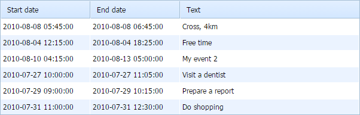

On this step, we will create a grid.
We will divide the step into 2 substeps:
If after completing the step, you will run webhost/yii_dhtmlx/web/grid, the app will produce the following grid that loads data from server and saves them back:

Let's create a View file that will present our grid. In the view we will use a standard code that initializes dhtmlxGrid and if you have been working with this component, it won't be difficult for you to understand the technique.
Also, we will initialize dhtmlxDataProcessor. The initialization of dhtmlxDataProcessor is usual.
If you slightly know dhtmlxGrid and will doubt what one or another command makes, refer to the following tutorials:
"views/grid/index.php" file
<!DOCTYPE html>
<head>
<meta http-equiv="Content-type" content="text/html; charset=utf-8">
<script src="../lib/dhtmlx/codebase/dhtmlx.js"></script>
<link rel="stylesheet" href="../lib/dhtmlx/codebase/dhtmlx.css">
</head>
<body>
<div id="grid_here" style="width: 600px; height: 400px;"></div>
<script type="text/javascript" charset="utf-8"> mygrid = new dhtmlXGridObject('grid_here');
mygrid.setHeader("Start date,End date,Text");
mygrid.init();
// refers to the 'data' action that we will create in the next substep
mygrid.load("./grid/data");
// refers to the 'data' action as well
var dp = new dataProcessor("./grid/data");
dp.init(mygrid);
</script>
</body>
In the controller, we'll need to implement 2 actions:
To load and process data we will use GridConnector. A common use of GridConnector is:
$connector = new GridConnector(null, "PHPYii");
$connector->configure(new $modelName,$id, $text, $extra,$relation_id);
$connector->render();
The GridConnector constructor takes 2 parameters:
The configure method configures the GridConnector object without rendering data and takes 5 parameters:
"controllers/GridController.php" file
<?php
namespace app\controllers;
use Yii;
use yii\web\Controller;
use Dhtmlx\Connector\GridConnector;
use app\models\SchedulerEvent;
"controllers/GridController.php" file
<?php
namespace app\controllers;
use Yii;
use yii\web\Controller;
use Dhtmlx\Connector\GridConnector;
use app\models\SchedulerEvent;
class GridController extends Controller { // here you should place all your functions }
"controllers/GridController.php" file
class GridController extends Controller {
public function actionIndex() { return $this->render("index"); } }
"controllers/GridController.php" file
class GridController extends Controller {
public function actionIndex() {
return $this->render("index");
}
public function actionData() { $connector = new GridConnector(null, "PHPYii"); $connector->configure( new SchedulerEvent(), "event_id", "start_date, end_date, event_name" ); $connector->render(); } }